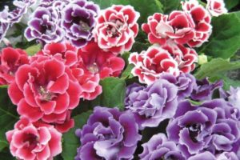
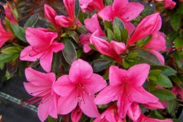
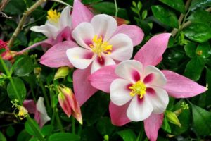

Цветущие комнатные растения – неоспоримые лидеры среди поклонников домашней флоры. Каждая их разновидность имеет свои требования по уходу. Цветение, с точки зрения ботаники, является завершающим этапом вегетативного цикла. В природе оно происходит с определенной частотой в одно и то же время года. При помещении цветущих растений в домашние не свойственные для них условия цикличность развития может сбиваться. Поэтому для цветения комнатных растений необходимо четко придерживаться рекомендаций по уходу за ними.
В большинстве своем родиной цветущих комнатных растений являются теплые регионы. Но, несмотря на это, оптимальное значение температуры в помещении для них колеблется в пределах +13+24°С. Различные виды домашней цветущей флоры в зимнее время хорошо переносят максимум +16°С, а для некоторых такие показатели – это минимум.
Незначительные температурные колебания с легкостью переносят практически все виды цветущих растений. Но длительное воздействие не свойственных им показателей могут оказаться губительными. В зимнее время домашние цветы часто приходится убирать с подоконников. Наиболее стойкими к колебаниям температурных показателей являются кактусы и суккуленты, которые по своей природе привыкли к большой разнице температур в дневное и ночное время.
Продолжительность и интенсивность освещения для цветущих растений – важное требование для поддержания их активного роста. Большинство видов нуждается в 12-16 часах нахождения при дневном свете или мощном искусственном освещении.
Требования к интенсивности освещения у разных видов цветущих растений разные. Одни хорошо растут на подоконнике, другие – в тени, одни без проблем переносят воздействие прямых солнечных лучей, другие в подобных условиях довольно быстро погибают.
Светолюбивые растения тянутся к солнцу, что в буквальном смысле означает разворот их листьев и бутонов в сторону солнечных лучей. Чтобы избежать однобокого роста, необходимо регулярно поворачивать горшок с цветком на несколько градусов в одну и ту же сторону. Когда бутоны закрыты, делать этого нельзя.
Первая причина отсутствия цветения – недостаток света. Также нарушать полноценное развитие может неправильно подобранный грунт.
Другими словами, любые нарушения в условиях содержания растения приводит к тому, что завершающая стадия его вегетационного развития попросту не может наступить.
Также часто любители домашней флоры стараются приобрести уже цветущие растения. Однако они не учитывают, что для продажи цветы искусственно обогащают питательными веществами, выдерживают под мощными лампами и всячески способствуют быстрому наступлению цветения. Все это негативно сказывается на здоровье растений, и чаще всего после первого же цветения они погибают.